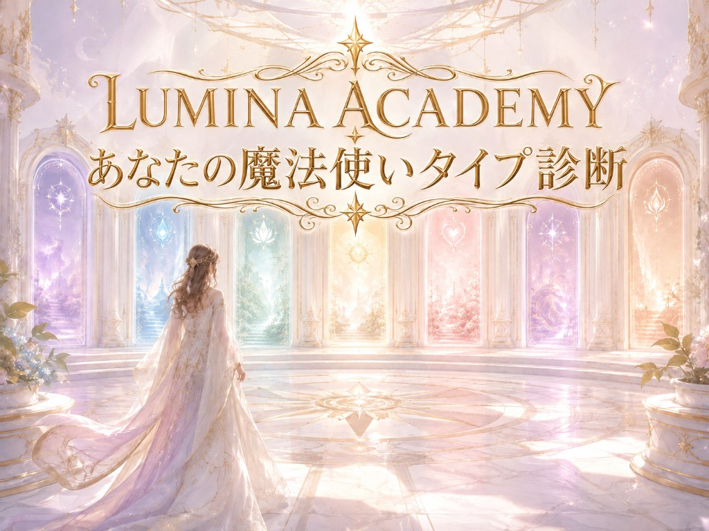
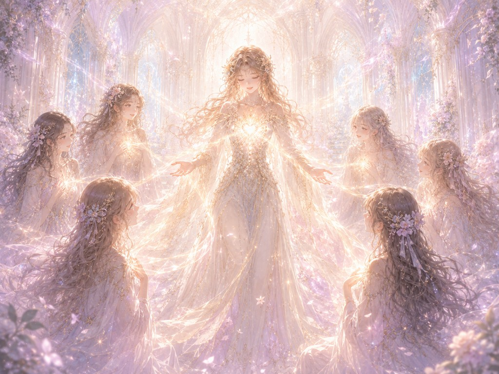

あなたに眠る魔力と、まだ開いていない可能性がわかる！
もしあなたが魔法使いだとしたら、どんな魔力を持っていると思いますか？
自分では気づいていない、あなただけの魔力が眠っているかもしれません。
いくつかの質問に答えるだけで、
を読み解きます。
あなた自身もまだ知らない、「魔法使いとしてのあなた」に出会ってみませんか？
Guide
深く考えすぎず、“今の自分に近い”と感じる数字を選んでください。
あなたの中にどんな魔力が眠っているのか、一緒に見つけていきましょう。
Final Question
自分では当たり前だと思っているけれど、人からよく感謝されたり、褒められたりすることは何ですか？
点数には入りません。診断結果をよりあなたらしくするための問いです。（任意）
Tie Breaker
時間を忘れるほど自然にできること、または人からよく感謝されることは何ですか？
あなたの答えのなかから、すでに使っている魔力を探しています。

Your Wizard Type
あなたは——
Message
あなたの魔力は、一つだけではありません。
環境・身体・行動・能力・感情・思考・魂——あなたの中には、まだ開いていない「7つの扉」があります。
「これからの人生、私は何をして生きていこう」
そんな想いが少しでもある方へ。忘れていた自分らしさを思い出し、新たな可能性に出会う未来への「7つの扉」を開く3Days無料体験プログラムへ無料ご招待します。
こちらからご参加ください。
https://syaga-lumina.syagapro.com/lumina-academy-sp.html?ftid=jwID97qK5upE